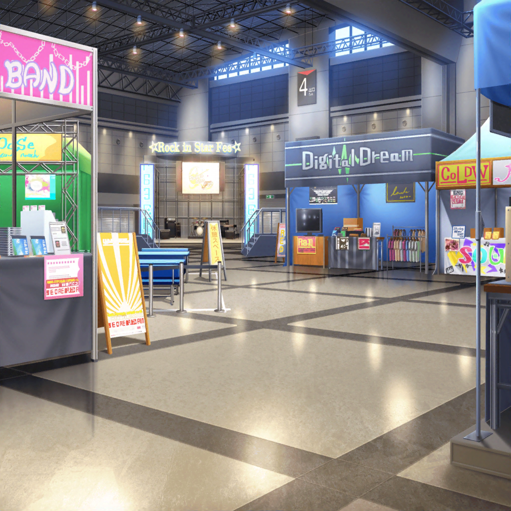

イベント 午後の部
イベント会場
香澄
ホントに今日のライブは最高だったね！
こんな場所でライブできるなんて滅多にあることじゃないもん！
沙綾
うんうん
香澄
なんて言うんだろう？ 音がもう、全然違ったじゃん！？
こう、どどーーーんって感じって言うか……
沙綾
ね、ホントにびっくりしたね
有咲
てか、香澄……
お前、いつまでそのテンションなんだよ……？
うちらのライブが終わって何時間たってると思ってんだ？
有咲
つーか、何回も同じ話聞かされてる沙綾の身にもなってみろよ。
付き合ってくれるのは、沙綾の優しさだからな！？
沙綾
ううん、そんなことないよ。
今日のライブは、私だって本当に興奮したもん
沙綾
香澄の言う通り、なかなかこんな場所でライブできないよ。
今日はずーっと興奮しっぱなしだよ！
香澄
やっぱり、さーやって優しいな～！
誰かさんと違って！
有咲
てか、沙綾はホント、香澄を甘やかしすぎだぞ……
香澄
有咲が、私に厳しすぎるんだよー！
有咲
は、はぁ！？
沙綾
まぁまぁ、２人とも。
あ、ねぇ、次は、どこのブースに行ってみようか？
りみ
だけど……大体のところには行っちゃった感じだね……？
あと、回ってないところと言ったら……
たえ
あ、写真……
沙綾
写真？
たえ
午前中、会場を回ってる時……
どっかに記念写真撮れるところあったよ
香澄
あっ！ あったあった！
ライブハウスのパネルの前で写真が撮れるところだよね？
沙綾
そういえばあったね！
せっかくだから、みんなで写真撮りに行ってみようか？
香澄
さんせーいっ！
ほら、有咲も一緒に行こっ！
有咲
お、おう……まあ、いいけど
イベント会場 記念撮影コーナー
沙綾
だいぶ近づいてきたね。
ええと、あと10組くらいで私達の番って感じかな？
香澄
ねぇ！ 今のグループの人達見た！？
有咲
なんかあったか？
香澄
今の人達、みんなでおんなじポーズ取ってたよ！
沙綾
見てるだけで楽しそうだったね！
香澄
ねえ！
私達もみんなおんなじポーズで写真撮ってみようよ！
沙綾
うん、それいいかも！
一致団結って感じだし、思い出になるもんね！
有咲
お、おんなじポーズ……？
わ、私はそういうのは……なんつーか……
沙綾
いいから、有咲もやるよ
有咲
……さ、沙綾って……香澄には甘いくせに、
私にはちょっと厳しくねーか……？
沙綾
それじゃあ、どんなポーズにしようか？
何か意見のある人ー？
香澄
あ！ あれはっ？
みんなで『へーんしん！』みたいな感じはっ！？
沙綾
変身かー……
面白いと思うんだけど……
何に変身するのか、意味わからなくない？
香澄
そ、そっか……
そう言われれば確かに……
たえ
それじゃあやっぱり……うさぎ？
沙綾
ふふっ。
みんなで耳をやる感じ？
かわいいけど……もっとポピパって感じのポーズないかな？
沙綾
りみりんは、なんかアイディアある？
りみ
え、えーと……
ちょ、チョココロネ……かな？
沙綾
なるほど……ねじれてる感じにするのかな？
うちのパン屋の宣伝にもなってありがたいけど……
みんなにやってもらうのも悪いからな～
有咲
（つ、つーか……
よく聞いてると、言いたいことは私とほとんど同じだけど、
沙綾が言うと、柔らかっていうか……）
沙綾
有咲は？
なんかいいポーズ、思いつかない？
有咲
わ、私は別に……なんでもいいし
沙綾
そっか……それじゃあこうしない？
みんなで楽器を弾いているときの格好をするの。
いかにもポピパって感じがすると思うんだけど……
香澄
あ、それいいかも！
ていうか、すっごいいいよ！
さっすがさーや！ みんなもいいよね？
りみ・たえ
うん！
香澄
有咲も、いいよね？
自分の楽器のポーズだよ！
有咲
……ん？ つーか、よく考えたら私、キーボードがないと、
なんのポーズ取ってるかよくわかんなくねーか！？
ただ、手を前に出してるだけだぞっ！？
沙綾
大丈夫、大丈夫！
さあ、私達の順番だから、有咲も急いで！
有咲
さ、沙綾……
ぜってー私には、ちょっとだけ厳しいぞ……